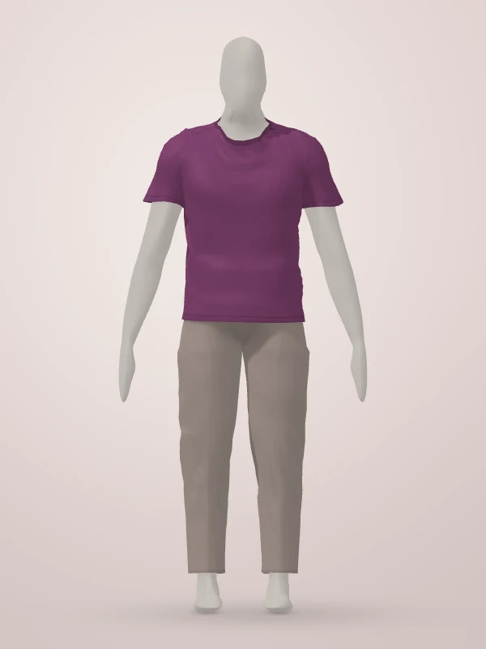
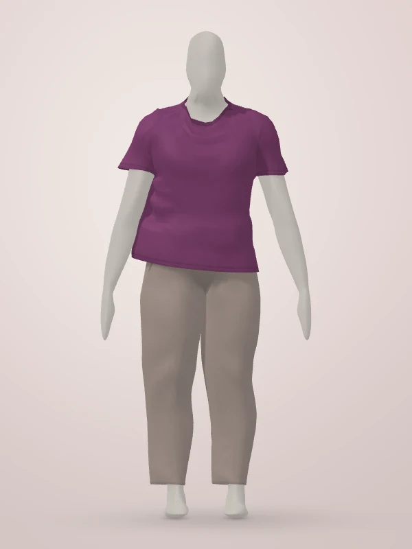

myclos.et
CS184 · Fall 2026 Milestone Report
myclos.et is an interactive 3D fitting room that shows how the same garment drapes on bodies with different proportions.
Kenny Pham, Aiden Solomon, Jeslyn Nguyen, and Junehee Lee
Progress
We reached our milestone goal of two garments draping on an adjustable body. The C++ demo now supports 11 styles in S/M/L, live body measurements, two-piece outfits, wind, and a stretch heatmap. Since the AI-assisted starting prototype, the fitting models and garment patterns have been revised, and the app can export measurements and matched views.
Team contributions [Add what each teammate implemented or tested]
Preliminary results



All three views show the same medium tee and trousers on the Tall preset. In the heatmap, teal marks 0% stretch, amber 15%, and red 30% or more. The tee had 18.7 cm of chest ease on Compact and 7.5 cm on Tall, measured as garment minus body circumference. A separate static check found cloth–body triangle crossings in 72 of 198 fits. Fit measurements · Collision results
Updated plan
We’ll focus on reducing cloth intersections near the shoulders and hips. Then we’ll compare two mesh resolutions and measure how timestep and spring stiffness affect settling and runtime. We’ll use consistent camera views for the final fit comparison and document the team’s implementation and results.
Milestone links
- Published webpage
- [Add URL]
- Progress video
- [Add video link]
- Slides
- [Add slides link]